Guía de PenTesting
Introducción
El presente documento tiene como función el ser una guía del proyecto realizado con el objetivo propósitos de mostrar las generalidades del PenTesting al igual que las herramientas usadas y el empleo de estas mismas.
Preparación del Laboratorio
Herramientas
Para el desarrollo del presente proyecto, se emplearon un número de herramientas las cuales nos permitirán realizar cada una de las diferentes fases pertenecientes al PenTesting. Este paso puede saltarse en su totalidad en el caso de estar trabajando con una instalación de Kali Linux puesto que, este distro en específico, ya cuenta con la gran mayoría de las herramientas con las que se trabajará.
Arp-Scan
Arp-Scan, en términos generales, cumple la función de un scanner de red en búsqueda de los dispositivos conectados en un red local.
# Instalación en Arch/Manjaro pacman -S arp-scan # Instalación en Ubuntu sudo apt-get install arp-scan
Nmap
De manera sencilla, nmap, o Network Mapper; es una herramienta que nos permite realizar el escaneo de dispositivos tanto locales como remotos con el fin de observar el estado de diferentes puertos al igual que la recuperación de información sobre lo que se encuentra en dichos puertos.
# Instalación en Arch/Manjaro pacman -S nmap # Instalación en Ubuntu apt-get install nmap
Metasploit
Metasploit es un framework de seguridad que posee una gran cantidad de scripts y herramientas que nos permiten realizar tanto escaneos como exploits para realizar pruebas de seguridad.
# Instalación en Arch/Manjaro pacman -S metasploit # Instalación en Ubuntu curl https://raw.githubusercontent.com/rapid7/metasploit-omnibus/master/config/templates/metasploit-framework-wrappers/msfupdate.erb > msfinstall && chmod 755 msfinstall && ./msfinstall
Exploitdb
Exploitdb es una base de datos dedicada a la recolección de exploits de diferentes clases. Esto es especialmente útil para la identificación de posibles vulnerabilidades a partir de la información conocida sobre el sistema.
# Instalación en Arch/Manjaro pacman -S exploitdb # Instalación en Ubuntu apt install exploitdb
Nessus
Nessus, es un scanner de vulnerabilidades. Esta herramienta se encarga de, a partir de una IP dada, realizar la identificación automática de las distintas vulnerabilidades presentes en el sistema a probar. Es a partir de esto que podremos probar diferentes exploits con los cuales realizar ataques.
Para la instalación de Nessus en Arch/Manjaro se puede seguir la guía de la wiki de Arch Linux.
En el caso de Ubuntu, se puede segur la guía de tenable.
Máquinas Virtuales
Lo primero a realizar para la realización del desarrollo de la presente proyecto está en la preparación del entorno de trabajo, o laboratorio de PenTesting. Para el desarrollo del presente proyecto, estaremos trabajando con un total de 2 máquinas virtuales, las cuales usaremos para la demostración de las diferentes etapas del PenTesting.
Estas nos permitiran trabajar en un ambiente controlado sin la necesidad de estar exponiendo nuestro equipo a redes externas, o correr el riesgo de afectar algún computador o red de un tercero.
VMWare
Para esta ocasión, estaremos usando la VMWare como nuestro Hypervisor para la creación de todas las máquinas virtuales en las que vamos a estar trabajando. Como configuraciones generales, y para los propósitos del desarrollo de este proyecto, la única opción verdaderamente obligatoria es la selección de la configuración de red en puente (O Bridged Connection). El resto de las configuraciones pueden dejarse al mínimo o según estas lo requieran. (Ver Fig. 1)
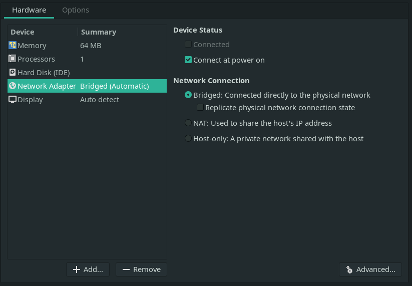
Metasploitable2
Metasploitable2 es una máquina virtual de Linux intencionalmente vulnerable utilizada para el entrenamiento de seguridad al igual que las pruebas de diferentes herramientas para realizar PenTesting.
Para nuestros propósitos de la demostración de las fases del PenTesting, en especial la identificación de vulnerabilidades, nos resulta especialmente útil debido las evidentes vulnerabilidades que estas presenta.
Podemos encontrar la imagen de esta máquina en se siguiente vínculo. Tras descargar y extraer, sólo debemos agregar el archivo .vmx a nuestra instalación de VMWare.
Kioptrix Level 1
Al igual que Metasploitable2, Kioptrix es una máquina virtual de Linux que presenta vulnerabilidades de manera intencional. Es por esto que nos interesa el trabajar con esta para el cumplimiento de los objetivos del desarrollo del presente proyecto.
La imagen de esta máquina puede ser encontrada en el siguiente vínculo. Tras descargar y extraer, sólo debemos agregar el archivo .vmx a nuestra instalación de VMWare.
Etapas del PenTesting
Fase de Recolección de Información
La recolección de información es de las fases más importantes en cuanto al PenTesting se refiere. Esto se debe a que, como es de esperarse, es aquí es donde se sientan las bases de lo que luego serían las pruebas de penetración a realizar.
Recolección Pasiva
La recolección pasiva dentro del PenTesting se refiere a la recuperación de Información del objetivo a atacar sin verdaderamente realizar un contacto directo. Esto puede verse principalmente en la identificación de las características principales de la página y la información que esta provee de manera pública (OSINT).
Este tipo de recolección de datos, es principalmente usada para realizar PenTesting a aplicativos web o servidores http o https. Esto se debe a que, en el caso de las redes en las que queramos realizar PenTesting, la información abierta al público sobre la red, puede ser poca o nula en algunos cosas.
Dentro de las herramientas que podemos usar están theharvester, subdomain3, whois al igual que motores de búsqueda como google e incluso, en el caso de aplicativos web, las páginas en sí.
# Estos son algunos de los comandos que nos pueden interesar para realizar la recolección # de información pasiva de algunas páginas web python brutedns.py -d google.com -s high -l 5
Recolección Activa
La recolección activa de datos ya trata como tal de la recolección de información a partir de la interacción con el objetivo de manera directa a través de la red. Este tipo de recolección se puede realizar a partir de escaneos de red usando herramientas como nmap o nessus en el caso de redes o nikto en el caso de páginas web.
Lo primero sería el realizar una inspección general de los dispositivos dentro de la red, esto puede hacerse de varias maneras:
# Usando arp-scan arp-scan --interface=enp3s0 --localnet # usando nmap nmap -sn 192.168.0.0/24
Staging
Tras haber identificado la ip objetivo, podemos es posible realizar un análisis más detallado del dispositivo y qué información está al alcance de nuestras manos. En este caso, se realizará el análisis de 2 ips objetivo.
Lo primero, usando nmap, y pasando la opción -p- como bandera, lo que indica que queremos hacer un recorrido de todos los puertos; podemos realizar el staging del dispositivo con el fin de, en el momento de realizar la inspección más a fondo, haya un mejor rendimiento en términos de ejecución.
# Escaneo de Metasploitable2 nmap -T4 -p- 192.168.0.17 # Escaneo de Kioptrix L1 nmap -T4 -p- 192.168.0.21
Deep Searching
Ahora, partiendo de la información que nos proporcionó el escaneo general de todos los puertos, podemos realizar un escaneo más a profundidad de cada uno de los puertos listados o a los puertos que consideremos relevantes o interesantes.
Algunos de los puertos seleccionados, o de interés general para nuestras aplicaciones, está en la búsqueda de los puertos abiertos relacionados con servicios SSH, o conexión entre máquinas; sistemas de archivos, como Samba u otros; servidores web, o servidores http; e incluso motores de búsqueda como lo pueden ser MySQL o PostgreSQL.
Empecemos con los puertos relevantes para la máquina de Metasploitable2.
# Escaneo a profundidad de Metasploitable2 nmap -A -p22,23,53,80,139,445,514,3306 -T4 192.168.0.17
Tras la ejecución de nuestro escaneo, se nos presentan varios detalles importantes para nuestra actual tarea. Podemos ver versiones de OpenSSH, que el puerto que está corriendo Telnet está abierto, la existencia de un servidor web de Apache al igual que su versión actual, la existencia de Samba al igual que su versión actual y, finalmente, la existencia de un servidor de MySQL 5.0.51a y otros protocolos.
Una de las cosas que podemos hacer es realizar la inspección de, en este caso, el servidor apache que está ejecutando para ver si podemos encontrar algún tipo de información relacionada con la configuración de esta u otras características del sistema. Visitando con nuestro navegador de preferencia la ip de nuestra máquina de Metasploitable2, se nos presenta la siguiente pantalla.
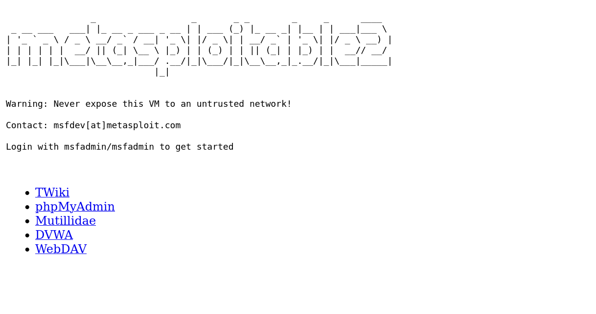
Explorando un poco, podemos ver la algunos de los menús que se nos presentan. Entre estos está el menú de Administrador php al igual que algunas de las páginas web que están montadas dentro del servidor.
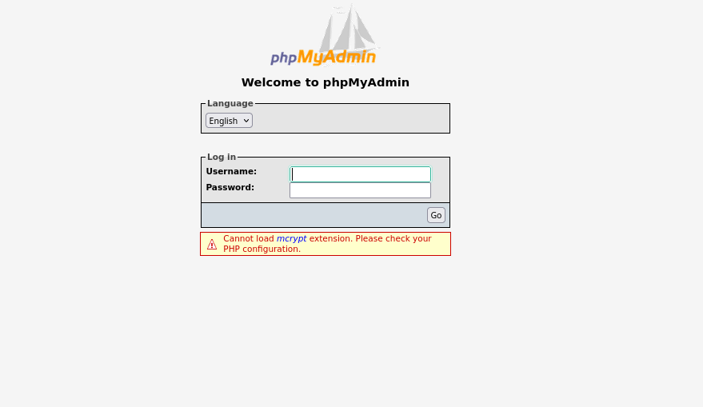
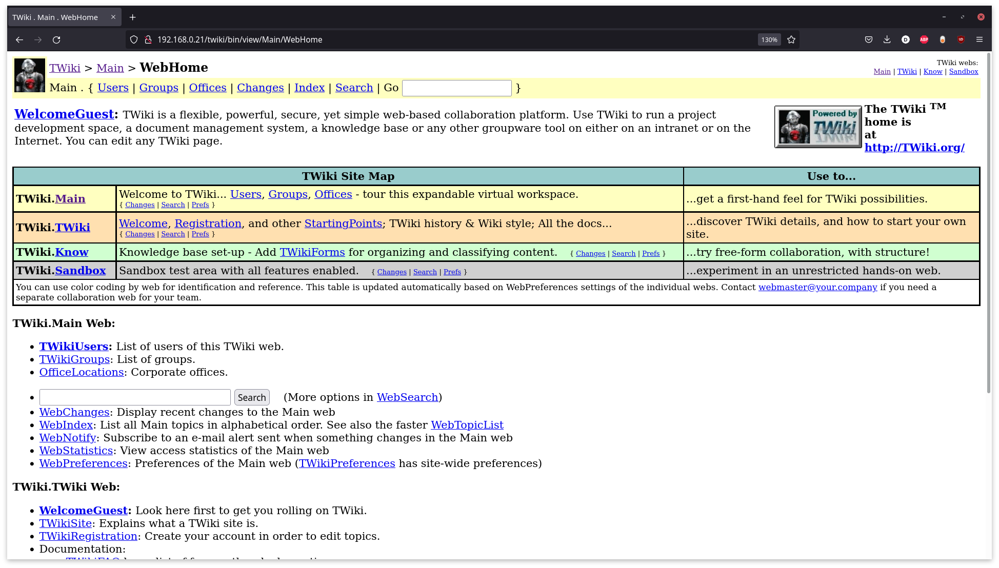
Usando nikto, podemos ver más información relacionada con la página web que está hosteando la máquina de Metasploitable2.
# Escaneo del servidor http nikto -h 192.168.0.17
Esto nos presenta con más información sobre la versión del servidor al igual que más urls que pueden considerarse interesantes. Cosas como que, revisando /phpinfo.php, podemos ver de manera abierta la configuración casi que completa del servidor al igual que muchas de las librerías que está usando (Ver fig. 5).

Ahora revisemos los puertos de la máquina de Kioptrix.
# Escaneo a profundidad de Kioptrix L1 nmap -A -p22,80,111,139,443,1024 -T4 192.168.0.21
De esto se esto, al igual que con la máquina anterior, nos presenta con más información sobre el sistema la cual nos puede ser útil más adelante. La existencia de OpenSSH versión 2.9p2; un servidor apache, versión 1.3.20 y mod ssl 2.8.4 que aún tiene su página de Test activada; los diferentes puertos de trabajo de rcpbind; y finalmente, la existencia de Samba son algunos de los resultado esta operación.
Podemos revisar el puerto 139 relacionado con Samba y los diferentes grupos de trabajo presentes en este. Probemos realizar una simple conexión al cliente de Samba.
# Nos conectamos al cliente de Samba smbclient -L 192.168.0.21
De esto, y sin la contraseña del cliente, podemos ver la existencia de algunos de los Sharenames a los cuales podemos tratar acceder. Intentando realizar la conexión usando smbclient 192.168.0.21\ADMIN$ o smbclient 192.168.0.21\IPC$, aunque no nos permite avanzar más de ahí, nos muestra que IPC$ no tiene contraseña.
Tras revisar, y anotar, todo lo que nos parezca interesante, y consideremos que se tiene suficiente información relacionada con el sistema, podemos pasar a la siguiente fase del PenTesting.
Fase de Búsqueda de Vulnerabilidades
Tras la identificación de algunos de los recursos disponibles durante la fase de la recolección activa de información. Se debe, ahora, buscar las posibles vulnerabilidades de las máquinas a las cuales les estamos realizando el PenTesting. Es a partir de las vulnerabilidades identificadas durante esta fase sobre la cual construiremos nuestro informe final para que, los responsables de la seguridad de la red, puedan realizar las correcciones necesarias para mitigar las vulnerabilidades encontradas.
Nessus
Una de las herramientas más relevantes que se tienen para la identificación de las diferentes vulnerabilidades presentes es Nessus. Como tal, esta herramientas es un escaner de vulnerabilidades propietario que nos permite realizar, pues, escaneos de diferentes ips dentro de una red local o remota, con el fin de identificar una gran cantidad de vulnerabilidades.
Lo primero a hacer, tras crear la cuenta de Tenable e ingresar, es crear un escaneo básico de red (Basic Network Scan). Esto nos permitirá realizar una revisión del host seleccionado con algunos de los parámetros y configuraciones recomendadas. Aunque es posible usar nuestras propias configuraciones en el caso de usar un escaneo avanzado (Advanced Scan), para los propósitos de esta guía, el escaneo básico será más que suficiente (Ver Fig. 6).
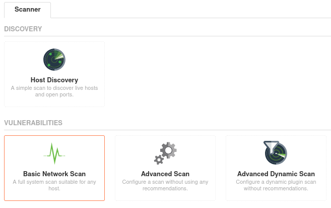
Ahora, sólo debemos agregar nuestras ips objetivos en targets y darle un nombre al escaneo (Ver fig. 7).
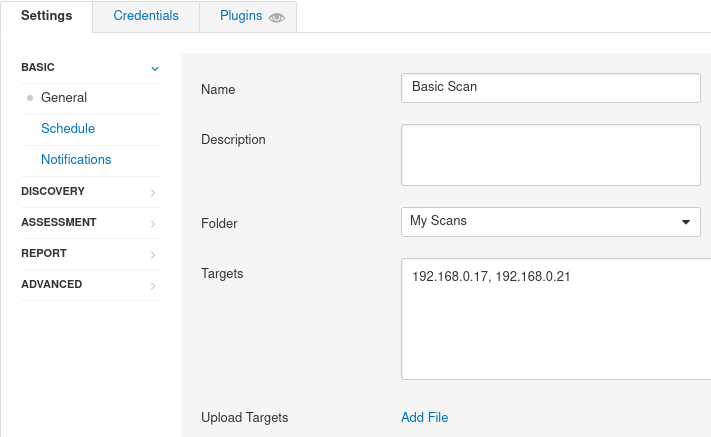
Tras esto, sólo es cuestión de ejecutar el escaner y esperar a que nos reporte las vulnerabilidades encontradas con las configuraciones establecidas. Esto nos permitirá ver, de mananera general, algunos de los problemas más evidentes de nuestro sistema y así saber a qué nos enfrentamos. Tras el escaneo de los targets dados, tendremos una lista de cada uno de ellos con las diferentes vulnerabilidades encontradas por Nessus.
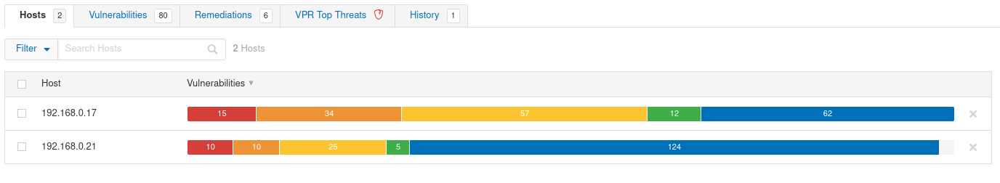
Como era de esperarse, tanto nuestra máquina de Metasploitable2 como Kioptrix, presentan una gran cantidad de vulnerabilidades. Esto nos permite, en primera instancia, el comprender el estado de seguridad de nuestro sistema a probar. A mayor cantidad de vulnerabilidades encontradas, más exploits deberían estar a nuestra disposición.
Revisemos primero los resultados para nuestra máquina de Metasploitable2.
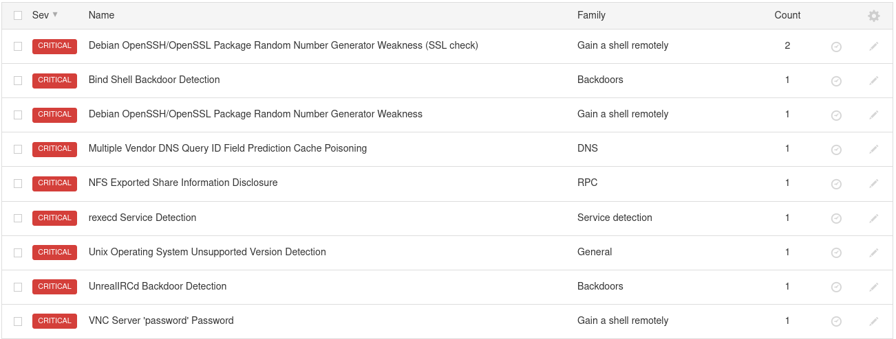
Como es posible observar, lo que primero llama nuestra atención son las vulnerabilidades de severidad críticas. Estas, por lo general, son las más fáciles de explotar a nuestro favor que implica graves problemas en la seguridad del sistema al cual le estamos realizando el PenTesting. Podemos ver detalles de cada una de las vulnerabilidades encontradas haciendo click en cada una de ellas.
Un ejemplo de estas vulnerabilidades críticas a destacar, está en las backdoors (ver fig. 10). En esencia, esto nos permite el acceso a un sistema de manera relativamente sencilla sin necesariamente ningún tipo de credenciales. Es a partir de esta "puerta trasera" por la cual un atacante, o en este caso nosotros, puede acceder a nuestra máquina. Es por esto que este tipo de vulnerabilidades deben ser solucionadas la manera más pronta posible.
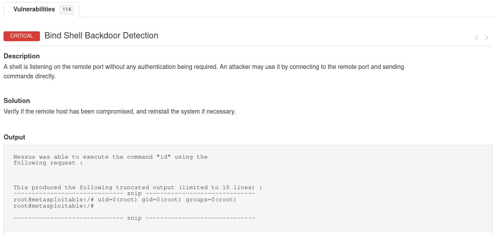
Otras de las vulnerabilidades fácilmente identificables dentro de este primer análisis está en el estado del sistema operativo, el cual para este momento ya no tiene soporte oficial; la presencia de vulnerabilidades de envenenamiento de caché; al igual que accesos remotos de la shell.
Veamos ahora las vulnerabilidades presentes en la máquina de Kioptrix.
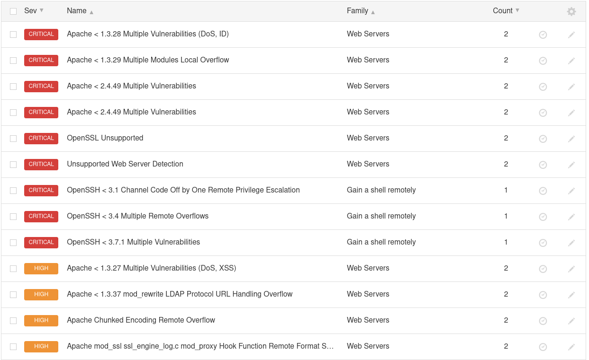
Lo primero a notar de estos resultados está en la gran cantidad de vulnerabilidades presentes en el servidor de Apache que está ejecutandose. Este tipo de vulnerabilidades está principalmente dado por problemas con versiones antiguas del software y otros módulos. Aunque no son aparentemente problemáticas por lo que están relacionadas con servidores web, este tipo de vulnerabilidades puede traer grandes problemas en el caso de acceso no autorizado a información de usuario o incluso acceso directo a la máquina como administrador.
Nmap Scanners
Otra de las herramientas que podemos usar para encontrar vulnerabilidades está en los escaneres manuales que podemos ejecutar. Uno de estos casos está integrado con relativa facilidad a la herramienta Nmap. A parte de ser una herramienta para el escaneo de un sistema, esta posee algunos escaneres que permiten identificar algunas vulnerabilidades que puede que no sean detectadas por Nessus.
Este tipo de escaneos manuales es necesario para poder tener una imagen más completa del sistema que estamos probando. Por ejemplo, está en el servicio de MySQL de nuestra máquina de Metasploitable2, que, por una mala configuración en el momento de la instalación, la cuenta de root no tiene una contraseña asignada. Esto no fue detectado durante el escaneo de Nessus a nuestra máquina por lo que es durante este escaneo manual, o escaneos más específicos, que podemos identificar este tipo de vulnerabilidades (ver fig. 12).
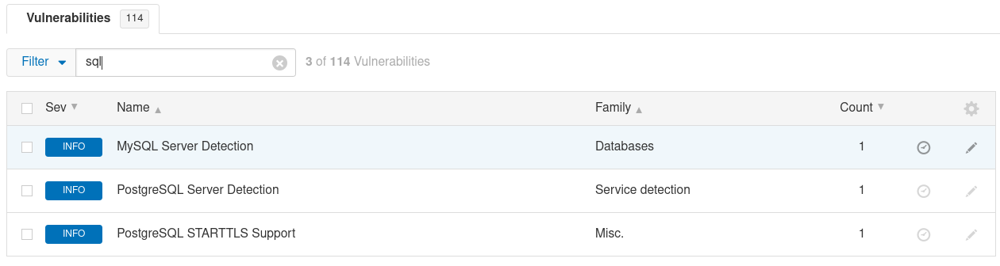
Estos escaneres pueden ser accedidos con relativa facilidad entrando a la carpeta respectiva en los archivos de Nmap. De igual manera, es posible filtrar entre los diferentes scripts en el caso de estar buscando algo más específico.
# Esta carpeta contiene toda clase de scripts para escaneo y exploits cd /usr/share/nmap/scripts # En el caso de estar buscando otro tipo de scanner o exploit, podemos cambiar el término de # mysql por lo que estemos buscando ls | grep mysql
Tras ejecutar nuestro último comando se nos presentarán varias opciones que pueden servirnos para identificar más vulnerabilidades. Sin embargo, para este caso, nos interesa más mysql-empty-password.nse puesto que es el script que nos permite saber si hay o no una contraseña.
# Ejecutamos el script de la siguiente manera estando en la carpeta que lo contiene especificando el puerto nmap --script=mysql-empty-password.nse -p3306 -T4 192.168.0.17 -v
Y, como era de esperarse, efectivamente se nos reporta que la configuración del servicio de MySQL, no posee una clave. Esta es una gran vulnerabilidad en términos de la información de usuario la cual puede ser expuesta.
Reportando Vulnerabilidades
Todas las vulnerabilidades que sean encontradas durante el desarrollo de esta fase, han de ser reportadas. Es por eso que será necesario anotar todo lo que sea identificado con el fin de incluirlo en el informe final.